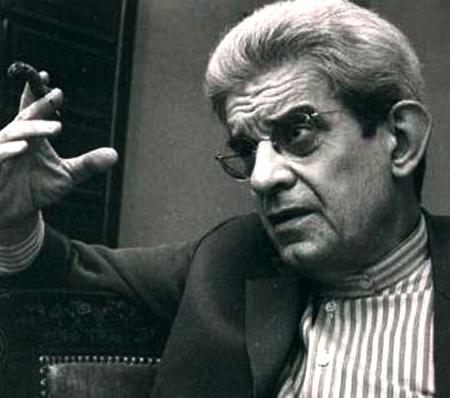
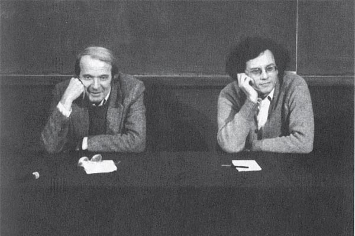

|
The High Magick of Lacan, Deleuze and Guattari
Author : yemeth |
|
Many times good information on high magick and the cracks it opens on the texture of reality isn’t in dark middle ages grimoires, neither in secret texts from suspicious organizations, not even written by those we would recognize as “magicians” according to the preconceptions through which we also judge the world surrounding us.
There are several authors in western philosophy whose ideas intertwine with the interests of those who seek to deconstruct themselves and what we ascribe as “real”. But in this article I would like to focus in three of them, who belong to the french philosophy of the second half of the XX Century.

Jacques Lacan and the creation of the subject as an entity
The initiatory path could be considered as walking in the opposite direction to the enslaving flow that tries to lead us in our life process. To revert such flow, to unlearn what was learned, to break down conditionings. Those are quite appropriate ways to describe the path.
For the french philosopher Jacques Lacan, often considered the second most influential personality in psychoanalysis (obviously after Sigmund Freud), who corrected, improved, generalized and even reverted Freud’s ideas, the subject doesn’t exist as an entity until it reaches an advanced stage in its development as a child.
We first have a stage in which the child doesn’t identify himself with anything he perceives, existing in a sort of primordial “lack-of-being”, that is to say, lacking a solid idea of himself. Then he reaches a phase characterized as the “mirror phase”, in which he identifies himself with his own image, that of his reflection, which is something that comes from outside.
The mirror is a metaphor. What it means is, it comes a time in which the child considers himself same to an image, a specific portion that is divided and isolated from a myriad of perceptions. Thus, a limited part of the child’s experience will become “I”, and the child will end up even calling that portion by that very name, “I”. But according to Lacan, this identification is deeply alienating -we could call it our first big error-, since this dooms the individual to exist outside himself, and so to search outside for himself.
Problems do not end up here, since the artificial separation between “self” and “Other” (which would be everything that I am not) is the root of a very human thing we call “desire”, which is an unceasing search for something that can finally complete us. The ambitions of desire are, however, useless. We can’t make ourselves complete, because we don’t lack anything, it is us who are in excess, since we are nothing. The problem is we have identified ourselves with an external image, we have given some specific part of our experience the label “I”, and as we do so we feel alienated, we feel like we are missing something. This terrible misunderstanding leads us to try to find through desire that which would bring us back to an unrealistic state of completeness, which is unrealistic because we ourselves are nothing.
And things get even worse!
Because until now, we only had two characters in our world, “I” and “Other”, that which Freud had shoddily identified as the child and the mother, but which deeper conceptual nature would later uncover Lacan.
Now the freudian “father” is going to enter the game. And the father is the patriarchal order itself; that which provides order and disciplines reality, that which structures and tames the “Other”.
When our perception is divided between “I” and “Other”, there is a problem even worse than desire, and it is the imprevisibility of such great Other. What does that thing that isn’t me want from me? How can I handle it? How do I appease Her wrath? How can I predict her behaviour? If life experience -that which happens to the “I”- can bring us both the beauty and terror, how can I acquire some kind of certainty over reality? How to avoid the brutal anxiety an undetermined reality brings?
The patriarchal order comes to solve such uncertainties. That is what the social, cultural and authoritarian structures are for. To bring us weak-minded humans the safety we need. A complex framework which will chain us to a society of discipline, regulated through timetables and rules and production targets. In fact, so regulated in every aspect of our lives, that we’re going to become fully dependent on such Order. And this isn’t just some mind game. If this order breaks down in the head of an oedipized person -a normal, “sane” person-, if that which chains him does suddenly fall, he’s inevitably facing a terrifying and conveniently medicalized word: psychosis.
But that which looks like a curse, might as well be the exit.
The psychotic cure
It is difficult to say if Lacan was fully convinced this or that way was the way to solve the problems related to the human condition and living in society. However, more than once he suggested psychosis as a way to get out of the blind alley into which normal development in our current societies leads us.
Our advantage here, is that the structure through which we have disguised the chaotic otherness that seems to surround us, is extremely fragile. Jacques Lacan called “Name-of-the-father” the nail that keeps the disguise together, consistent and stable. The Name-of-the-Father is that which seemingly stops the chain of signifiers from the unconscious, the incessant productions from the unconscious, and builds a stable meaning, an apparently consistent reality that seems to make sense, and a coherent narrative which describes it.
Jacques Lacan wrote as well about the “foreclosure of the Name-of-the-Father”, which is the expulsion of this mechanism that hinders the formations from the unconscious, that clogs the desiring machines. The expulsion of the Name-of-the-Father from the symbolic universe of the subject, is the mechanism that gives birth to what we call psychosis.
What is the psychotic phenomenon? It is the emergence in reality of an enormous meaning that has the appearance of being nothing at all - in so far as it cannot be tied to anything, since it has never entered into the system of symbolization - but under certain conditions it can threaten the entire edifice
[Seminar III]
Obviously, falling unexpectedly into psychosis can become a problem. Basically, what ties the world together loosens in psychosis, and our personal narrative on the way reality behaves doesn’t work anymore. Suddenly we face the world as it really is; chaotic and terrible. We lack any idea on what it’s going to do with us, and how can we make it do what we want it to do.
That is indeed a terrifying sight! So our reaction, weak-minded humans, is to start to compulsively create stories to explain out that thing that isn’t us. Mythical stories, paranoid stories, terrifying stories. And it is all because we cannot bear a world without order, once we’ve become too used to it.
Also, when we achieve the foreclosure of the Name-of-the-Father, a process we call Initiation in high magick, we’re going to find yet another obstacle. And it is that reality itself is going to behave in a very very strange way.
According to Jacques Lacan, when we short-circuit our narrative on reality in the psychotic process, the unconscious is going to manifest itself. It is going to come back to us through the Real. This thing he calls “Real” is trickier than it looks, since Lacan here is pointing specifically to our subjective experience of reality. He doesn’t take risks, so he doesn’t speak about objective changes in reality, but he does indeed assert that the contents of our unconscious (more specifically, of what Jung would call the Shadow) are going to come back to us with razor sharp teeth in our subjective experience of reality. Anyone who’s gone through this experience, Robert Anton Wilson’s “Chapel Perilous”, knows the synchronicities pile up to bring us an experience of reality which holds our worst and most buried nightmares, the deepest and most terrible contents from our unconscious. Such is the price to pay for the repression of the unconscious through Law and Order.
However, we can of course survive this trial by fire. And if we do, it will be the first step in a very very long path that will go on undoing knots in our heads. But at least we will have crossed the threshold.
Beyond this experience, Jacques Lacan is very cautious. He is fully conscious that things do not end up here, since we still mistakenly identify ourselves with an “I” that we aren’t, our perceptions divided between what I am and what I am not. So he occasionally gives pointers to get done with such separation. Obviously, he points out that any efforts to chase the object of desire, the elusive “objet a”, are useless. Such is the illusion of the “objet a”, the object of desire which looks like it would make us complete, but everytime we reach it, slides to inhabit some other host.
An interesting pointer Lacan gives to get closer to the undoing of the limits between what I am and what I am not, is redirecting our sexuality towards some representation of the Other, of that which I am not. Such a mechanism is also pointed out in high magick; people like David Shoemaker recommend this redirection of sexuality as one of the most effective mechanisms to help the initiate in his way towards the Knowledge and Conversation of the Holy Guardian Angel.
Before proceeding with the next set of philosophers, there’s some other thing that derives from the philosophy of Jacques Lacan. And it is the idea that if our unconscious manifests through the Real in mechanisms such as psychosis, that could help us learn about the way magick works even in its simplest mechanisms, such like sigils in Chaos Magick; the insertion of a specific content deep inside the unconscious (the symbol to be manifested is encoded in a way the unconscious might ‘understand’ it), so that it manifests back through our subjective perception of reality. Or maybe we could here also quote Deleuze and Guattari, ”whatever is symbolically abolished returns in reality in a hallucinatory form”.

Gilles Deleuze and Félix Guattari: Líbido, Numen, Voluptas
“The schizophrenic process is a voyage of initiation, a transcendental experience of the loss of the Ego”
Deleuze and Guattari aren’t as cautious and restrained as Jacques Lacan. We’re trapped in the oedipal structures, in the child-mother-father triangle, and reality has been painfully chained by a suffocating order. And the only way out is to tear down such order, to escape to a pre-oedipal state in which Law and Order become just a bad memory of an enslaving system which we should overthrow.
What we find in the depths of psychosis -first as horrific, then as bliss- the Lesser and Greater Guardians of the Threshold that Steiner wrote about, the Shadow which becomes an Angel, our Holy Guardian Angel, these are all a mystical perspective that Deleuze and Guattari are going to turn upside down. And this is because for them, the immanent God is a “body without organs” which just spills over the desiring production and confiscates it. This God is a bewitched surface which claims every productive force, making everybody believe in her deception: That it is her who gives them life and movement. For the authors, this is a mystical equivalent of that which the Capital does in society in respect to the productive forces. The God is an undifferentiated kingdom which underlies the world of appearances: The Dogon Egg in which lie the seeds of everything that can be in the world.
So, the real divine for them isn’t this body-without-organs, this fluid substratum over which we find things that move at varying speeds (a mountain moves slowly, words can move really fast). The “divine”, if we are to use such a word, would be the very disjunctive energy they call Numen (a word that suggests divine will, divine presence), the energy that kickstarts that which synchronizes and supplements the economy of production with an economy of circulation, that is to say, which routes our realities. Numen is an energy which comes from us in the end, from we who are able to configure reality. The change that psychosis-initiation performs over the structures of desire liberates the transformation of the Libido energy into this kind of energy which significantly increases our ability to create realities, even if those are claimed by the body-without-organs pretending it is a divine thing, pretending it is God, pretending through an optical effect that everything depends on him.
While for the fully oedipized subject desire consists in wanting things for himself like the perfect consumer in a buying frenzy, the schizo who’s liberated himself from the yoke that paralizes the desiring machines from his unconscious has a desire that is qualitatively very different, a desire-production that clashes with the forced capitalist production mechanisms and makes him understand that ”factories are prisons, they do not resemble prisons, they are prisons”
The desire from the schizo doesn’t want things for himself. His desire is desire-production, it is to create realities. He knows he cannot produce such reality unless he uses some external mechanisms like the coincidence/synchronicity we know in magick, these alterations in the fluxes which traverse the body-without-organs, but that is enough for him to understand the power of his own desires to manifest reality. His desire is desire-production, and in it he confronts the repression of a system which wants slaves who obey and lock themseves up inside the parameters of the realities that have been already created for them, a system which doesn’t want schizos who go creating their own realities. The schizo finds that the general repressive system is the only thing which can truly make him insane, and only when this system disturbs him enough to turn him into a mentally disturbed person. The schizo isn’t crazy! The crazy ones are the “normals”, those who remain oedipized. Insanity is the consensual hallucination men are enslaved to, and the schizo-initiate becomes insane only if repressed. The schizo is repressed because desire threatens society, because his desire-production is revolutionary, because instead of fleeing to some other reality, the schizo who manifests his desire disturbs the order of the domineering reality.
You could consider this like a growing unstoppable drive towards that which is sometimes called “True Will”, and as well the inevitable development some warn about when they say an Initiate can never go back, that he will never be able to do anything but proceed further in the path he’s opened in his head, ”let’s go further, we still haven’t dismantled the self enough”. The schizo needs to live himself, to live his desire-production, beyond the restrictions that his social order has set around him. Anything else would make him insane.
But in the moonlit state following Initiation, the self-joy is not possible ”for a subject who can’t orient himself but through the disjunctions in a registry surface”. The ‘clues’ given by moonlit reflections which occasionally coagulate over the surface of what is perceived are not enough. Beyond the swaying in his relationship with a reality that seems to become alive around him, he must appoint ”a new alliance between the desiring machines and the body without organs so as to give birth to a new humanity or a glorious organism”.
The alliance between the Initiate and his Angel, between the schizo’s desiring machines and the body-without-organs, manifests a “solar power” according to Deleuze and Guattari, a machine that produces “intensive quantities”, an energy that is not Libido neither Numen, but a third type called Voluptas, which is connective synthesis instead of the disjunctive synthesis that Numen was. From the forces of attraction and repulsion, the authors affirm, emerge these intensive elements which carry to almost unbearable exaltations.
In the wedding celebration of this new alliance, this new link between the desiring machines and the body-without-organs, lost in the “solar force” of this sudden density, the whole body devours in self-erotic pleasure the “intensive quantities” liberated in the process which transforms the energy from Numen to Voluptas, an “I feel” that precedes the subject/object relationship, that itself precedes the infinite narratives and discourses that can be traced over the sand of reality.
”This is how it should be done. Lodge yourself on a stratum, experiment with the opportunities it offers, find an advantageous place on it, find potential movements of deterritorialization, possible lines of flight, experience them, produce flow conjunctions here and there, try out continua of intensities segment by segment, have a small plot of new land at all times. It is through a meticulous relation with the strata that one succeeds in freeing lines of flight, causing conjugated flows to pass and escape and bringing forth continuous intensities for a Body-without-Organs.”.
Obviously, this is just a brief introduction to the ideas of these authors, whose work is immense. Many things have been simplified, but I’ve done everything I could to stay loyal to their spirit. At least I hope it works as an introduction to a series of aspects of their philosophy which might be specially relevant to those who are interested in the path of high magick.
|
|

|  RSS
RSS